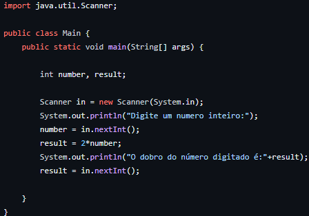

Nessa disciplina, trabalhamos com programação em Java, realizando diferentes listas para entender seu funcionamento no código:
Iniciamos com os conceitos básicos de programação e, em seguida, utilizamos a IDE IntelliJ como ambiente para desenvolver nossos programas.
Dessa forma, começamos a aplicar na prática esses conceitos e lógica, como no seguinte exemplo:

Neste exemplo, trabalhamos com variáveis, seus tipos e nomenclatura. Foi implementado um programa que recebe um número e retorna o dobro desse número, utilizando a classe Scanner e a função System.out.println.
Em outro exemplo, produzimos um programa de conversão de temperatura de graus Celsius para Fahrenheit:
Decisão:
Trabalhamos com as estruturas de decisão if/else e switch, realizando diferentes atividades que utilizavam essas funções:
Este exemplo de estrutura if representa o funcionamento: cada if representa uma condição para a execução do bloco que só ocorre se a condição for verdadeira.
Este exemplo de switch mostra que o funcionamento é semelhante ao if, onde cada case é uma condição que só é executada quando verdadeira, e o default é executado quando nenhum case é verdadeiro.
Repetição:
Exploramos as estruturas de repetição, que possibilitam a repetição de um bloco de código específico por uma quantidade desejada de vezes.
O while representado mostra que o bloco presente nele será repetido enquanto i for menor ou igual a 10, incrementando a cada vez que for executado.
O do/while age da mesma maneira que o while, porém garante que o bloco seja executado pelo menos uma vez.
O for realiza a repetição do bloco com o uso de uma variável de controle em sua condição.
Vetores:
Os vetores são variáveis que podem comportar diferentes valores dependendo da quantidade de posições que possuem:
Este exemplo mostra como inicializar um vetor, inserir valores nas posições e imprimir os valores invertidos.
Matrizes:
As matrizes se comportam de forma semelhante aos vetores, mas alocam os valores em mais de uma dimensão.
Este exemplo encontra a maior soma entre as linhas e colunas da matriz:
Funções:
As funções são blocos que são executados quando há uma chamada para a função, podendo ter parâmetros. Funções podem ou não retornar um valor após sua execução.
Este exemplo mostra uma função que recebe um número inteiro como parâmetro, realiza a soma de todos os números anteriores até o número inserido e retorna essa soma no final.
Funções recursivas:
As funções recursivas realizam a mesma função das funções normais, mas chamam a si próprias durante a execução.
Dessa forma, as funções ficam mais dinâmicas e fáceis de implementar. O exemplo acima é o mesmo do anterior, mostrando como o processo se tornou mais resumido.
Programação Orientada à Objetos
Iniciamos com a orientação a objetos, aprendendo seus conceitos e implementando-os em nossos programas.
Neste exemplo, foi criada uma classe ContaBancaria para explicar cada conceito:
Os atributos dessa classe são as variáveis utilizadas para todos os processos da classe, com modificadores de acesso private para impedir o acesso externo.
O construtor inicializa os valores dos atributos, garantindo que o saldo sempre comece em 0 quando criamos um novo objeto.
Os métodos realizam as ações de sacar e depositar, recebendo parâmetros de valor e evitando transações irrealistas.
Os getters e setters permitem acessar e alterar os atributos criados.
O método toString retorna os valores dos atributos em formato de String para consulta do usuário.
Aqui está o principal que chama a classe:
Inicia-se com a criação de um novo objeto ContaBancaria, que recebe um número e titular como parâmetros. Depois, o método depositar é chamado com o valor 100 em uma estrutura de decisão. Em seguida, o getSaldo retorna o valor da conta, e o método sacar (13.40) é executado em outra estrutura de decisão. O programa finaliza com um getSaldo para mostrar o saldo final e imprime um toString.
Classes Java
String:
Exploramos também classes nas bibliotecas Java, como a classe String e seus métodos:
JOptionPane:
Uma classe explorada foi a JOptionPane, que permite a criação de caixas de diálogo visuais para entrada e visualização de dados pelo usuário.
Ao executar, surgem interfaces personalizáveis conforme as propriedades da classe.
Herança:
Estudamos mais aspectos das classes, como a herança:
A herança é usada quando uma nova classe herda atributos e métodos de uma classe existente, permitindo a especialização da classe filha.
Exceções:
Outra ferramenta explorada foi o tratamento de exceções:
O bloco try/catch trata erros durante a execução. Se um erro ocorre no bloco try, o bloco catch é executado e o try é interrompido.
JavaFX:
Começamos a trabalhar com o JavaFX, que permite criar interfaces gráficas visuais.
Este exemplo mostra a criação de uma figura que responde à colisão com as bordas e muda de cor: